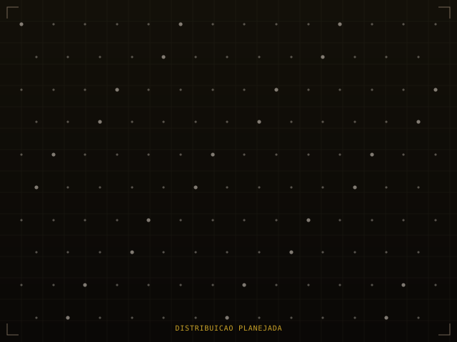
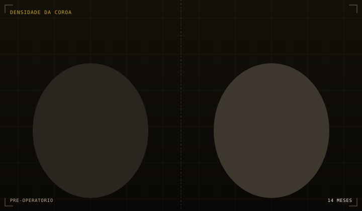
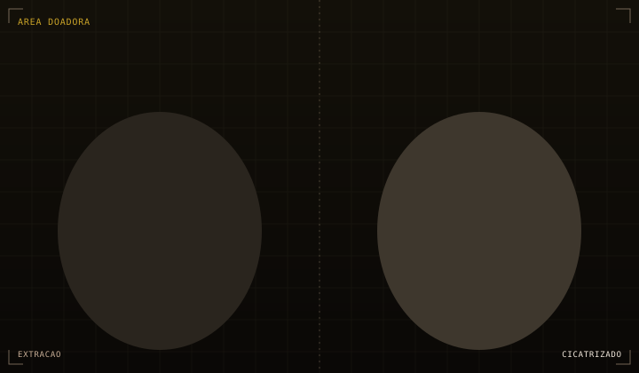
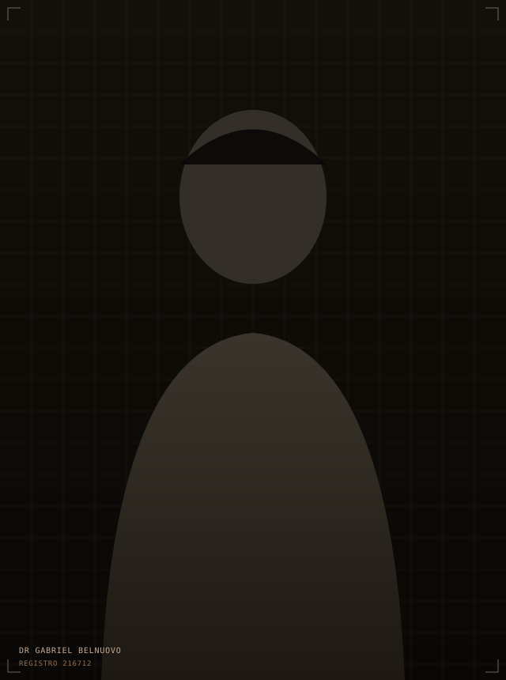

Transplante capilar. Avaliado por parâmetro, não por promessa.
Esta página não usa antes-e-depois emocionantes nem contagem de fios. Ela expõe os critérios técnicos que definem se o seu caso tem indicação, qual protocolo se aplica e o que esperar em cada etapa, para que a decisão seja sua, informada.
FIG. 01 — Centro cirúrgico, Atria Medical Center, Avenida Brigadeiro Faria Lima
01
Indicação
Quem tem indicação e quem não tem.
A maior parte do marketing do setor trata a indicação como universal. Não é. Existem quatro fatores que determinam se o transplante resolve o seu caso ou apenas adia um problema maior. Eles são avaliados na pré-consulta, antes de qualquer proposta.
Indicado
Queda estabilizada — padrão de calvície que já não avança em ritmo acelerado, confirmado por histórico e, quando necessário, exame dermatoscópico.
Indicado
Área doadora suficiente — densidade na nuca e nas laterais compatível com a extensão a cobrir, sem comprometer a aparência da própria doadora.
Não indicado
Queda ativa não tratada — operar sobre uma calvície em progressão compromete o planejamento e desperdiça enxertos que ainda cairiam de forma natural.
Não indicado
Expectativa incompatível com a doadora — quando o número de folículos disponíveis não sustenta a densidade que o paciente imagina, a indicação correta é recalibrar a expectativa, não operar assim mesmo.
Um "não indicado agora" é resultado possível da pré-avaliação e não invalida uma nova análise no futuro, após tratamento clínico da queda ativa.
02
Protocolo
Sete etapas, sem atalho em nenhuma.
O protocolo abaixo é fixo. Não existe versão reduzida para quem tem pressa, porque cada etapa reduz um risco específico.
FIG. 03 — Etapa 04, definição do design capilar com o paciente presente
01
Pré-avaliação por imagem
Fotos enviadas por WhatsApp, analisadas antes de qualquer agendamento presencial. Sem custo.
02
Exame tricoscópico
Medição da densidade da área doadora e classificação do padrão de calvície, com equipamento de ampliação.
03
Exames laboratoriais
Solicitados conforme histórico clínico, para garantir segurança anestésica e cirúrgica.
04
Desenho da linha capilar
Marcação com o paciente acordado, em frente ao espelho, com ajuste conjunto antes da confirmação final.
05
Extração e implantação FUE
Anestesia local com sedação leve. Extração folicular sem corte linear, implantação com ângulo e direção calculados por região.
06
Orientação de alta
Protocolo de cuidados por escrito, com canal direto para dúvidas nos primeiros dez dias.
07
Acompanhamento até o mês 12
Registro fotográfico periódico, avaliado pelo próprio cirurgião, até o resultado se consolidar.
03
Parâmetros
Os números que definem o caso.
Três medidas substituem qualquer estimativa dada sem exame. Nenhuma delas é conhecida antes da tricoscopia.
Nº
Unidades foliculares
Quantidade extraível da área doadora sem comprometer sua densidade. Define o teto real do procedimento, não o desejado.
Ø
Densidade doadora
Folículos por centímetro quadrado na nuca e nas laterais. Quanto maior, mais opções de planejamento e de sessões futuras.
%
Cobertura alcançável
Percentual de densidade original recuperável na área receptora, calculado a partir das duas medidas anteriores.

FIG. 02 — Distribuição planejada, exemplo ilustrativo de densidade por região
04
Cronograma
Doze meses, sem etapa omitida.
A biologia do folículo segue um calendário fixo, incluindo a fase de queda que o material promocional do setor costuma excluir.
Dia 0Cirurgia
Procedimento de um dia. Alta no mesmo dia, sem internação.
Dia 3–5Retorno administrativo
Liberação para atividades de escritório. Atestado emitido quando necessário.
Sem. 3–6Queda telógena
Os fios transplantados caem. O folículo permanece; é etapa esperada, não falha.
Mês 3–4Retomada do crescimento
Primeiros fios finos e irregulares. Primeira leitura objetiva do planejamento.
Mês 6–8Ganho de espessura
Densidade visualmente perceptível, ainda não final.
Mês 12Resultado consolidado
Ponto de comparação valido entre foto inicial e final.
05
Referências
Casos catalogados, não vitrine.
Cada referência inclui o campo tratado, o intervalo entre as imagens e o método, na mesma estrutura de dados — para permitir comparação, não só impressão.
Campo
Linha frontal
Método
FUE padrão
Intervalo
12 meses

Campo
Coroa
Método
FUE padrão
Intervalo
14 meses

Campo
Área doadora
Método
No Shave FUE
Intervalo
21 dias
As imagens desta seção são ilustrativas até a publicação do acervo fotográfico com autorização de uso de imagem dos pacientes. Resultados variam conforme densidade da área doadora, padrão de queda e características individuais de cada caso.

Responsável técnico
Um executor, do desenho ao acompanhamento.
Em operações de alto volume, o médico assina o plano e delega a execução a técnicos. O protocolo aqui elimina essa variável: quem desenha, extrai e implanta é a mesma pessoa que assina o prontuário.
Essa escolha limita o número de cirurgias por semana. É uma troca deliberada: menos volume, mais controle sobre a variável que mais afeta o resultado.
Nome
Gabriel Belnuovo
Registro
CRM-SP 216712
Área
Tricologia e transplante capilar
Técnica
FUE, No Shave em casos elegíveis
Centro cirúrgico
Atria Medical Center, Faria Lima
06
Perguntas
Registro de dúvidas frequentes.
01O resultado é definitivo?
Para os folículos transplantados, sim — eles vêm de uma área geneticamente resistente à ação hormonal. Os fios originais ao redor continuam sujeitos à progressão da calvície, por isso o planejamento considera a evolução futura, não apenas o estado atual.
02Como se calcula o número de folículos?
A partir da densidade doadora medida por tricoscopia, da área receptora a cobrir e da densidade final desejada. Qualquer número informado por telefone, sem exame, é estimativa comercial, não dado clínico.
03Existe cicatriz visível?
A técnica FUE não usa corte linear. A extração deixa micropontos que cicatrizam em poucos dias e ficam imperceptíveis a olho nu quando a extração é bem distribuída.
04Qual o nível de desconforto?
Concentrado nos minutos da aplicação da anestesia local. Com sedação leve, o restante do procedimento ocorre com o paciente confortável e consciente.
05Qual o afastamento necessário?
Três a cinco dias para atividades administrativas, com atestado quando necessário. Atividades de impacto, sauna e exposição solar retornam de forma progressiva.
06Existe idade mínima?
Em geral a partir dos 25 anos, quando o padrão de queda tende a maior estabilidade. Casos mais jovens exigem avaliação criteriosa, porque um desenho feito cedo demais pode não envelhecer bem.
07Há parcelamento?
Sim, em até 12x sem juros no cartão. O valor final depende do número de unidades foliculares e da extensão da área tratada, definidos após a avaliação.
08Quem executa a cirurgia?
O Dr. Gabriel Belnuovo, CRM-SP 216712, do desenho à implantação, com apoio de equipe de enfermagem. Nenhuma etapa crítica é delegada a terceiros.
07
Próximo passo
Solicitar avaliação técnica.
A pré-avaliação por imagem não substitui o exame presencial, mas indica se há elementos suficientes para prosseguir. Sem custo, sem compromisso de agendamento posterior.
Análise inicial das fotos em até um dia útil
Parcelamento em até 12x sem juros, valor definido após avaliação
Resposta honesta, incluindo a possibilidade de não indicação